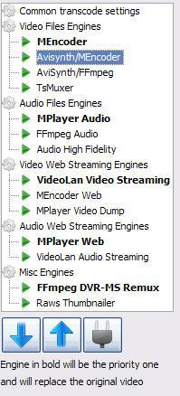

You may think why bother with transcoding when muxing is available. That is absolutely right in most cases. But there are some video files which can't be muxed because of special conditions. For example, you may get a trailer with h.264 video codec and AVC level 5.1. but your playback device (PS3, Xbox, TV) might not support that. In that case you will need transcoding.
You can see that there are some reasons why people want to optimize transcoding. On the Windows platform there is an additional method available for transcoding.
AviSynth is a frame server for free, available on Windows platform (development of the Linux version will not be continued). Regarding UMS readme one should install AviSynth 2.5.7. Latest AviSynth 2.5.8 seems to cause stuttering on certain files.
After installing AviSynth you also have to install the plugin vsfilter. Download it here. You have to decompress the 7z-file and copy the vsfilter.dll from unicode-subdirectory to your AviSynth plugin directory (C:\program files\AviSynth 2.5\plugins).
Transcoding means decoding the video in the first step on the PC and in the second step encoding it to MPG2 and streaming it to your PS3. For decoding the free software ffdshow is commonly being used. In order to demux container formats ffdshow needs the free Haali Media Splitter. Both software are available as software packages, so called codec packs.
Who wants to get an "everything included" package should consider K-Lite Mega Codec Pack which is available here. There are different variants available, from basic to mega but also a 64-bit variant.
After installing k-lite codec pack you may have to configure subtitles and your speaker setup.
Change to Windows Start menu "programs > K-Lite Codec Pack > Configuration > ffdshow audio decoder". In menu "mixer" you have to set your speaker config. In order to get 5.1 surround sound (speakers: 4x surround, 1x center, 1x subwoofer) on your PS3 you have to set "3/0/2 - 5 channels".
After that, run "programs > K-Lite Codec Pack > Configuration >Haali Media Splitter" and change to options tab. Choose menu "languages" and select your language priority:
The settings above are only valid when the avisynth video engine is used for transcoding.
Go to menu compatibility and set "autoload VSFilter" to "Yes".
For those who prefer minimal installations CCCP codec pack is the right choice. It is available here. Read FAQ for configuration. It should be similar to setup K-Lite Codec Pack.

After installing and configuring AviSynth, ffdshow and Haali media splitter you can enable both engines AviSynth/MEncoder and AviSynth/ffmpeg.